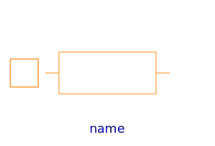

Please have a look at UsersGuide.ReluctanceForceCalculation for an explanation of the different flux tube categories and resulting sub-packages.
Due to the restrictions on reluctance force calculation outlined there, flux tube elements with a possibly non-linear material characteristic mu_r(B) must have a fixed shape during simulation of converter motion. Hence, the dimensions of these flux tubes are defined as parameters in the model components that extend the base class Interfaces.PartialFixedShape.
For initial design of magnetic circuits, the relative permeability of possibly non-linear flux tube elements can easily be set to a constant value mu_rConst (non-linearPermeability set to false). In some cases, this can simplify the rough geometric design of a device's magnetic circuit. Once an initial geometry is found, the magnetic subsystem can be simulated and fine-tuned with more realistic non-linear characteristics of ferromagnetic materials. Doing so requires setting of the parameter non-linearPermeability to true and selection of one of the soft magnetic materials of Material.SoftMagnetic.
| Name | Description |
|---|---|
|  HollowCylinderAxialFlux | (Hollow) cylinder with axial flux; fixed shape; linear or non-linear material characteristics |
| HollowCylinderRadialFlux | Hollow cylinder with radial flux; fixed shape; linear or non-linear material characteristics |
| Cuboid | Flux tube with rectangular cross-section; fixed shape; linear or non-linear material characteristics |